出发前安装这些软件
Google Maps步行导航、找车站入口和餐厅。需确保日本期间手机网络可以使用Google服务。
Japan Travel by NAVITIME查日本铁路换乘、站台、票价和末班车，遇到复杂换乘时比只看地图更清楚。
Suica / PASMOiPhone可在Apple Wallet开通Suica；否则抵达后购买实体交通卡。市内JR、地铁、公交刷卡。
Tokyo Disney Resort App购买/绑定门票、查看排队、预约项目、餐厅和地图。入园前登录好账号。
Google Translate菜单、车站告示和现场沟通；提前下载日语离线包。
天气软件tenki.jp或Yahoo!天気。河口湖前一晚重点看云量、降雨和富士山能见度。
另外保存航空公司App、护照和保险电子版。高速巴士、迪士尼、Shibuya Sky、河口湖温泉酒店和日光特急建议提前订。
D1｜9月24日 北京 → 东京
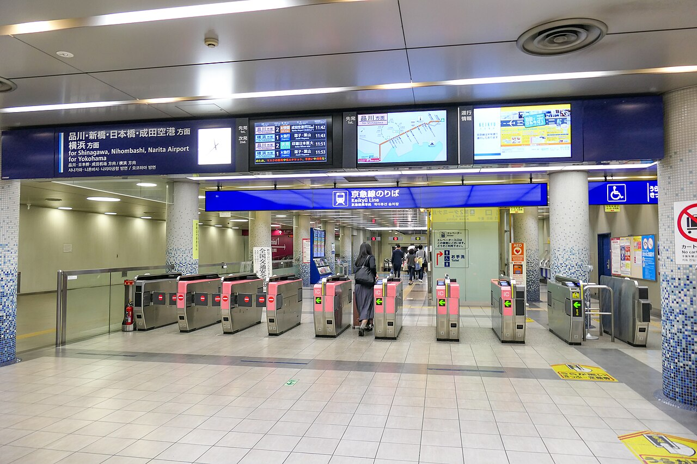
抵达后
机场 → 新宿酒店
成田：跟随“Railways”标识，乘JR成田特快 N’EX到新宿，约80—90分钟；或Skyliner到日暮里后换JR山手线。羽田：乘京急线到品川，换JR山手线到新宿，约40—50分钟。
成田：跟随“Railways”标识，乘JR成田特快 N’EX到新宿，约80—90分钟；或Skyliner到日暮里后换JR山手线。羽田：乘京急线到品川，换JR山手线到新宿，约40—50分钟。
入住后
酒店附近步行
控制在1公里范围，便利店采购水和早餐；不要拖行李跨区吃饭。
控制在1公里范围，便利店采购水和早餐；不要拖行李跨区吃饭。
晚餐：新宿站周边拉面、烧鸟或居酒屋，预留60—90分钟。
Google Maps：成田→新宿 ↗D2｜9月25日 浅草寺 → 晴空塔 → 银座
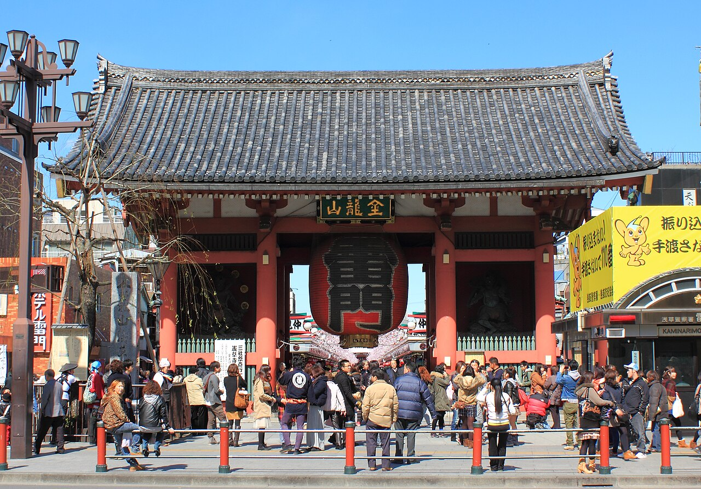
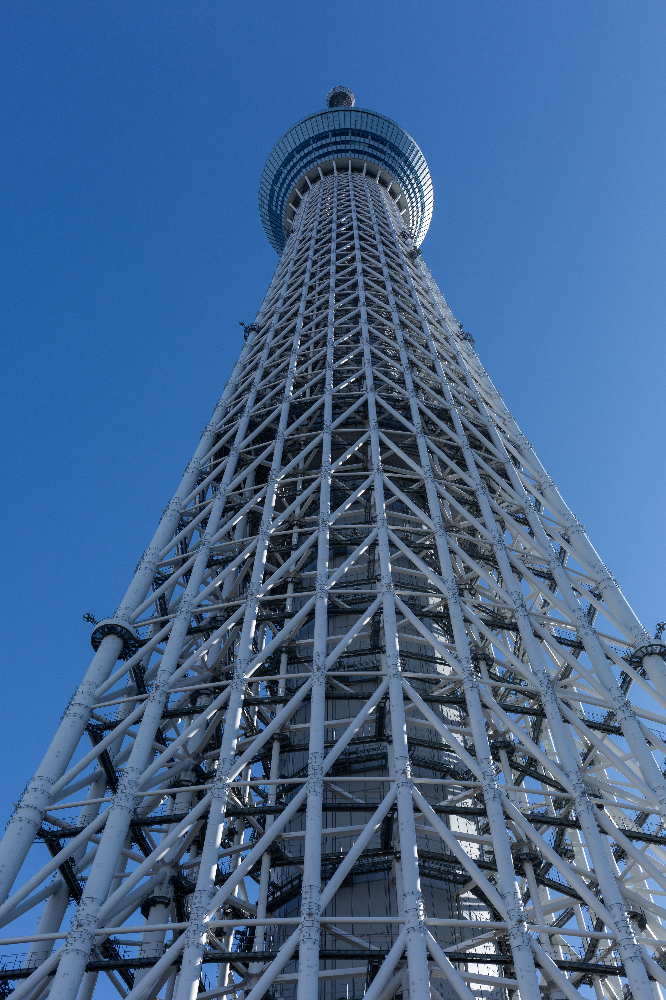
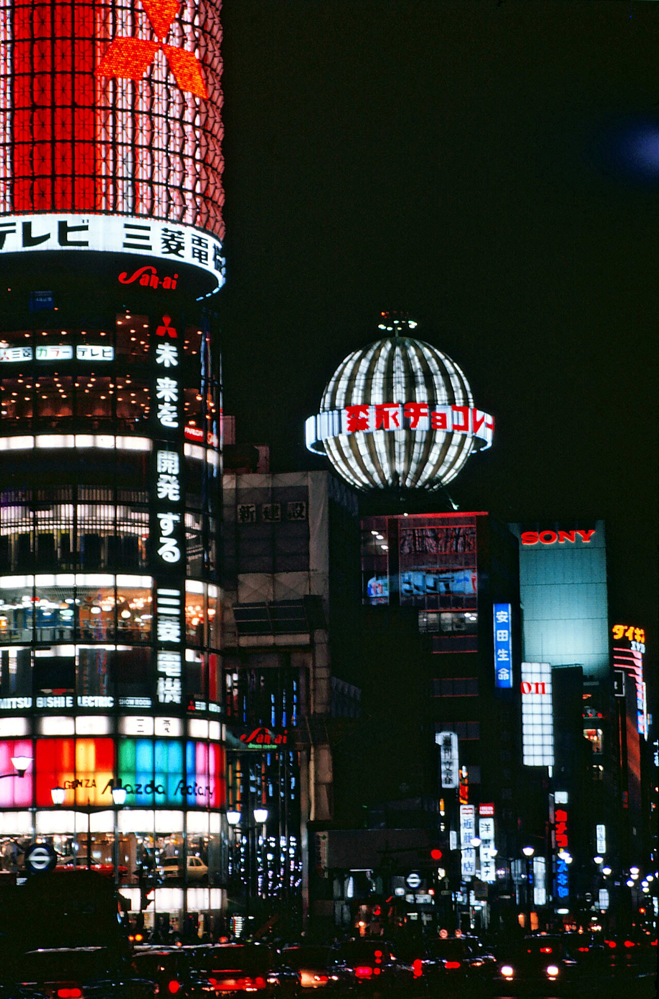
08:30
新宿站 → 浅草站
乘都营大江户线到藏前，换都营浅草线到浅草；约35分钟。出站后步行5—8分钟到雷门。
乘都营大江户线到藏前，换都营浅草线到浅草；约35分钟。出站后步行5—8分钟到雷门。
09:15
浅草寺
雷门 → 仲见世通 → 宝藏门 → 正殿，游览约2小时。
雷门 → 仲见世通 → 宝藏门 → 正殿，游览约2小时。
12:15
浅草 → 晴空塔
从浅草站乘东武晴空塔线1站到东京晴空塔站，约3分钟；也可沿隅田川步行约25分钟。
从浅草站乘东武晴空塔线1站到东京晴空塔站，约3分钟；也可沿隅田川步行约25分钟。
16:30
晴空塔 → 银座
押上站乘都营浅草线直达东银座站，约25分钟；下车步行逛银座中央通。
押上站乘都营浅草线直达东银座站，约25分钟；下车步行逛银座中央通。
吃饭：11:30在浅草吃天丼/荞麦；18:30银座吃寿司、烧鸟或居酒屋。
Google Maps：当天路线 ↗D3｜9月26日 镰仓 → 大佛 → 江之岛
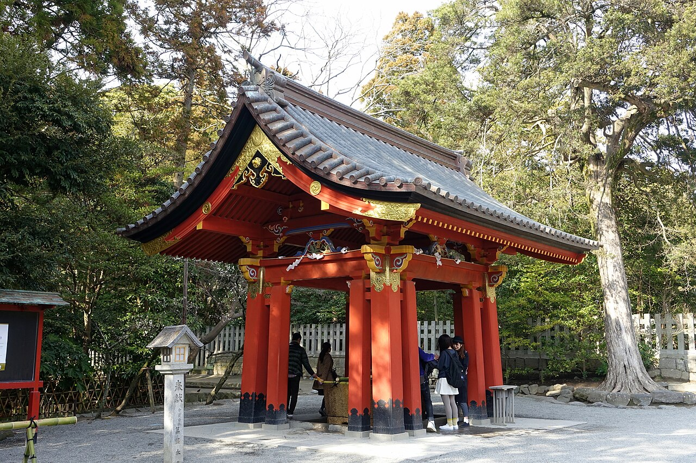
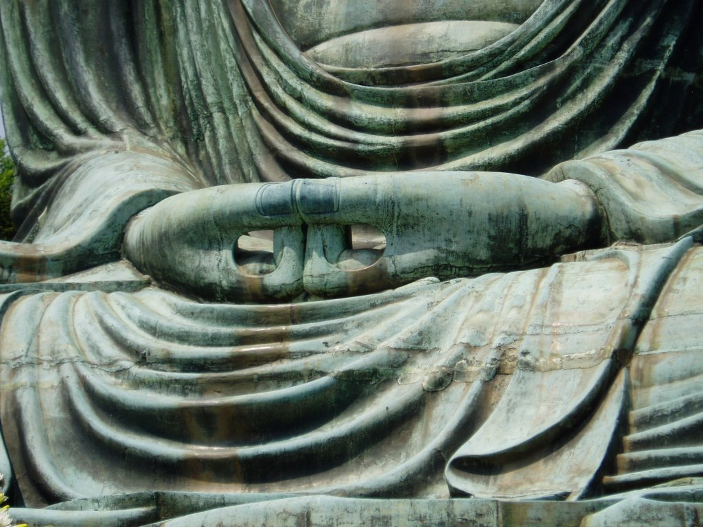
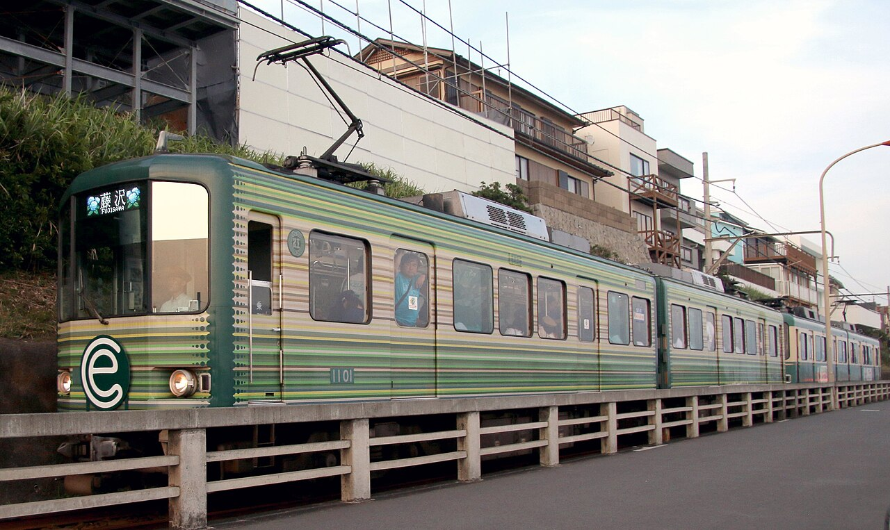
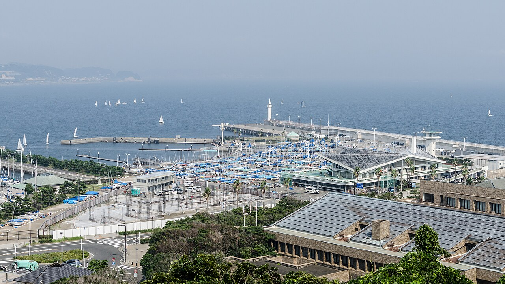
07:30
新宿站 → 镰仓站
乘JR湘南新宿线往逗子方向，约60分钟；尽量乘直达车，刷Suica即可。
乘JR湘南新宿线往逗子方向，约60分钟；尽量乘直达车，刷Suica即可。
08:45
镰仓站 → 鹤冈八幡宫
东口出站，沿若宫大路步行约15分钟；游览约60分钟，再逛小町通。
东口出站，沿若宫大路步行约15分钟；游览约60分钟，再逛小町通。
12:15
镰仓站 → 长谷站
乘江之电约5分钟；长谷站步行7分钟到高德院大佛，之后步行约10分钟到长谷寺。
乘江之电约5分钟；长谷站步行7分钟到高德院大佛，之后步行约10分钟到长谷寺。
15:30
长谷站 → 江之岛站
乘江之电约20分钟；出站后到江之岛入口仍需步行约20分钟。
乘江之电约20分钟；出站后到江之岛入口仍需步行约20分钟。
18:00
江之岛 → 新宿
江之电到藤泽，换JR湘南新宿线回新宿；约75—90分钟。
江之电到藤泽，换JR湘南新宿线回新宿；约75—90分钟。
吃饭：11:15小町通吃吻仔鱼丼/鳗鱼饭；江之岛下午吃海鲜小食；回东京后再吃晚餐。
Google Maps：当天路线 ↗D4｜9月27日 明治神宫 → 原宿 → 表参道 → 涩谷
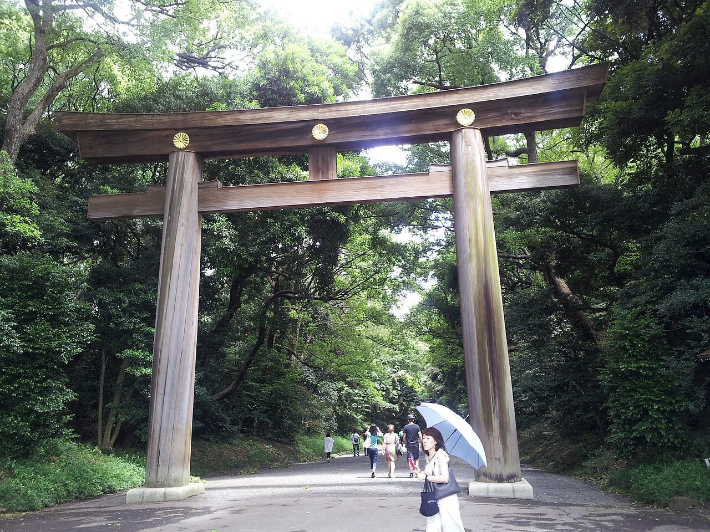
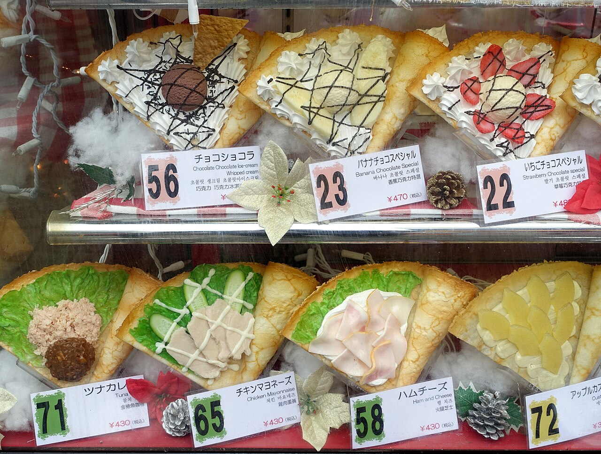

09:30
新宿站 → 原宿站
乘JR山手线约5分钟；西口/表参道口出站，步行到明治神宫入口。
乘JR山手线约5分钟；西口/表参道口出站，步行到明治神宫入口。
10:00
明治神宫
从鸟居走到本殿单程约15分钟，连同参观预留90分钟。
从鸟居走到本殿单程约15分钟，连同参观预留90分钟。
12:00
竹下通 → 表参道
全程步行；竹下通约60—90分钟，表参道根据购物兴趣预留2小时。
全程步行；竹下通约60—90分钟，表参道根据购物兴趣预留2小时。
16:30
表参道 → 涩谷
可沿街步行约25分钟，或东京Metro银座线1站到涩谷。看十字路口后按预约时间登Shibuya Sky。
可沿街步行约25分钟，或东京Metro银座线1站到涩谷。看十字路口后按预约时间登Shibuya Sky。
吃饭：原宿午餐安排拉面/咖喱；涩谷晚餐吃烤肉或寿司。Shibuya Sky建议提前预约日落前时段。
Google Maps：当天路线 ↗D5｜9月28日 东京 → 河口湖温泉
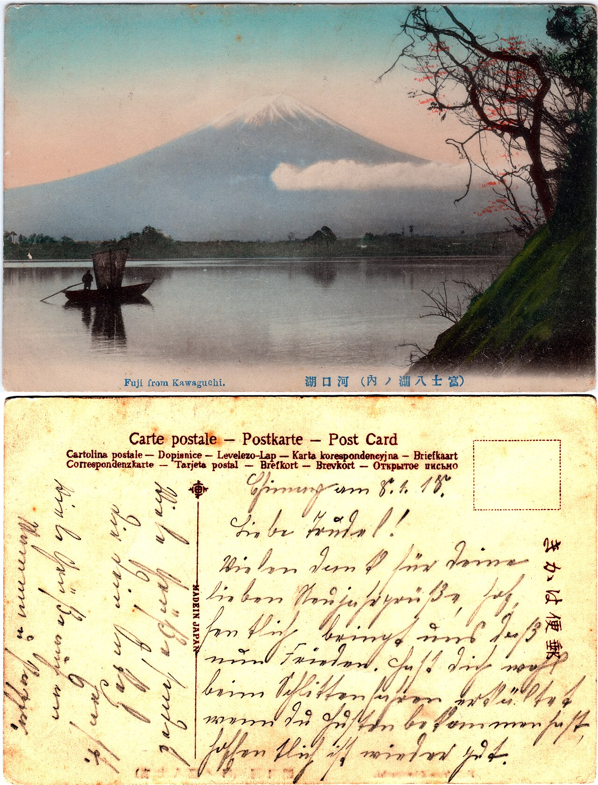
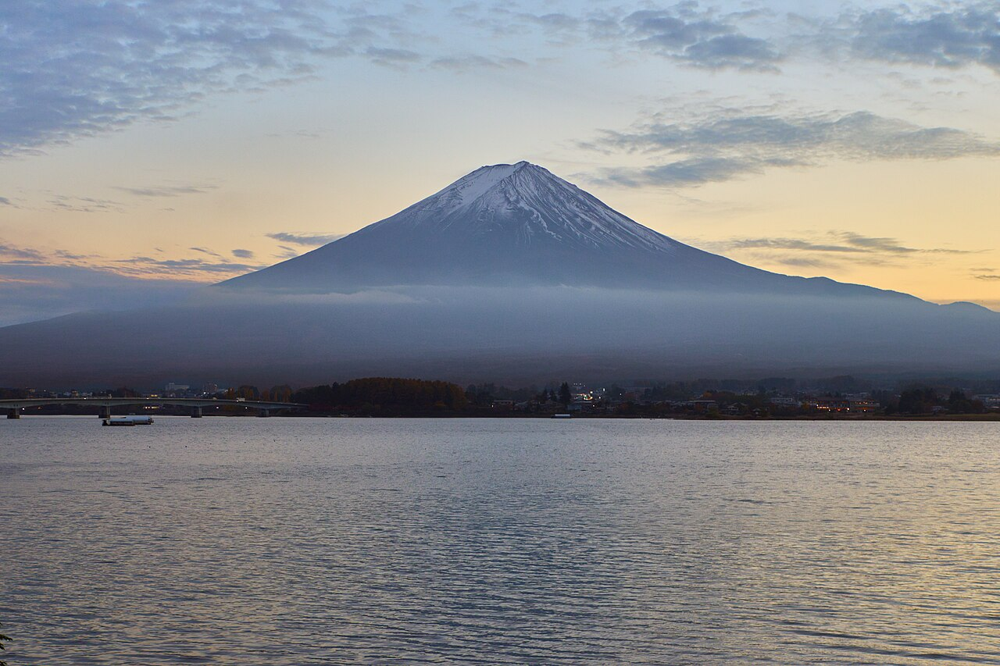
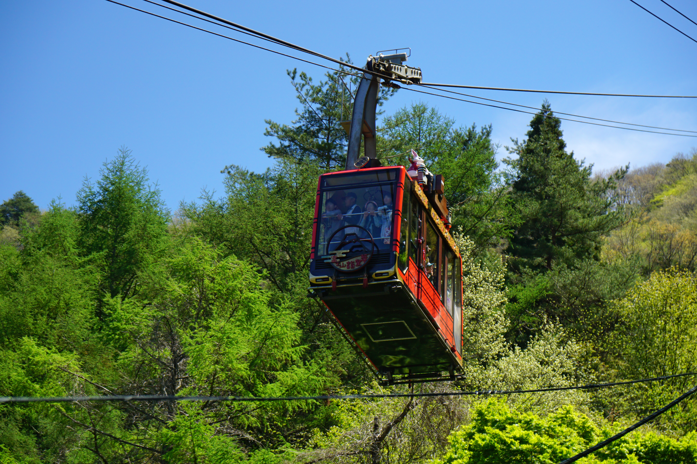
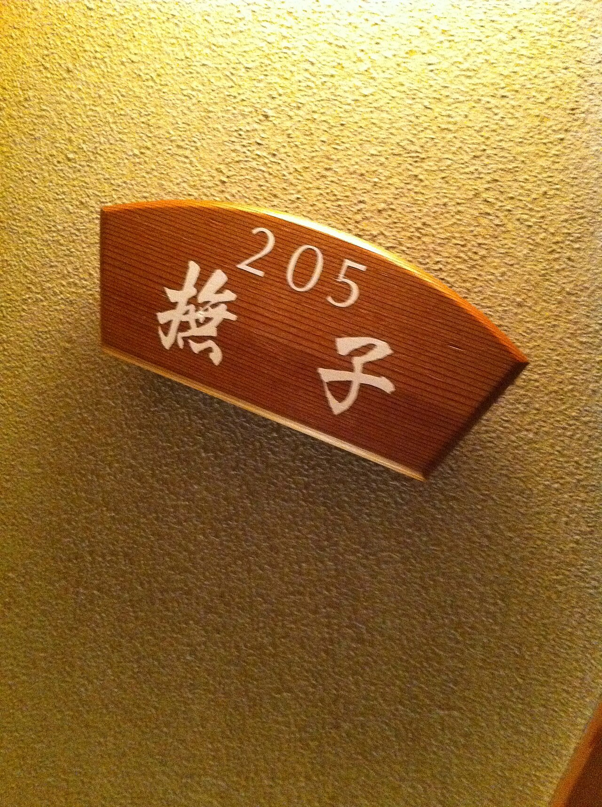
07:15
酒店 → 新宿高速巴士总站
提前30分钟到达，找到前往河口湖站的乘车口；车票建议提前网上购买。
提前30分钟到达，找到前往河口湖站的乘车口；车票建议提前网上购买。
08:00
新宿 → 河口湖站
富士急高速巴士，正常约1小时45分至2小时；堵车时会更久。
富士急高速巴士，正常约1小时45分至2小时；堵车时会更久。
10:15
河口湖站 → 大石公园
乘河口湖周游巴士Red Line，在“河口湖自然生活馆”下车，约30分钟。
乘河口湖周游巴士Red Line，在“河口湖自然生活馆”下车，约30分钟。
13:30
大石公园 → 天上山缆车
Red Line返回“游览船・缆车入口”站，约25分钟；下车步行数分钟。
Red Line返回“游览船・缆车入口”站，约25分钟；下车步行数分钟。
16:30
缆车 → 温泉酒店
优先使用酒店接驳车；没有接驳则周游巴士或出租车，避免拖行李长距离步行。
优先使用酒店接驳车；没有接驳则周游巴士或出租车，避免拖行李长距离步行。
吃饭：河口湖站或湖畔吃ほうとう；晚餐直接选含“一泊二食”的温泉酒店套餐。
Google Maps：河口湖路线 ↗D6｜9月29日 河口湖 → 御殿场奥莱 → 东京
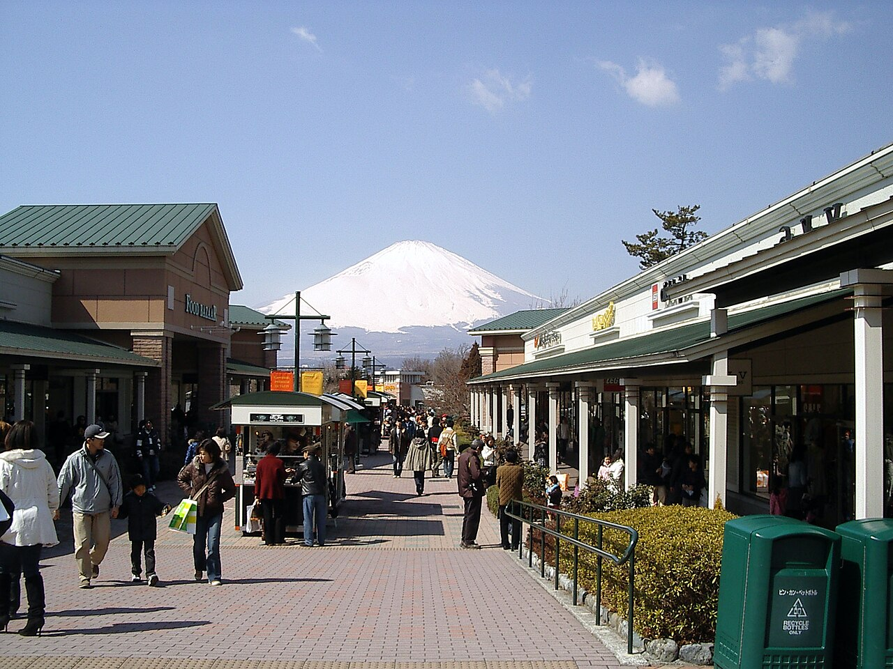
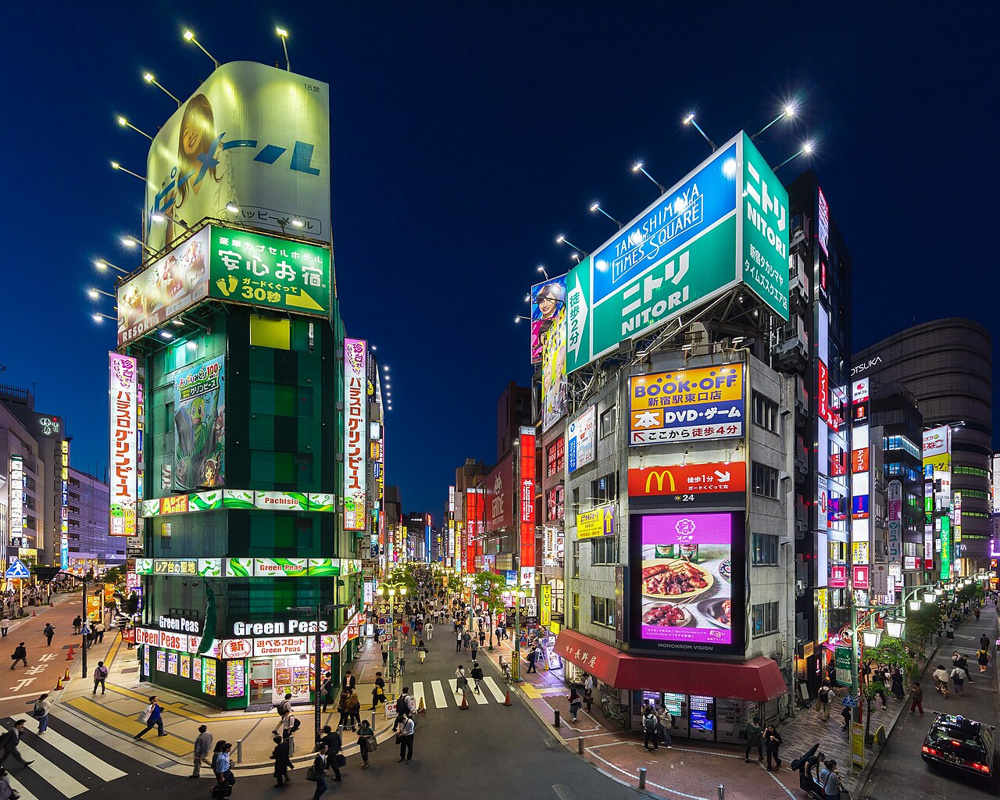
09:00
酒店 → 河口湖站
坐酒店接驳车，先将大件行李寄存或确认是否能直接带上巴士。
坐酒店接驳车，先将大件行李寄存或确认是否能直接带上巴士。
10:00
河口湖站 → 御殿场站/奥莱
乘富士急巴士，部分班次需要在御殿场站换免费接驳车；总计约1.5—2小时。必须按出发前班次表安排。
乘富士急巴士，部分班次需要在御殿场站换免费接驳车；总计约1.5—2小时。必须按出发前班次表安排。
12:00
御殿场奥莱
先午餐，再购物4—5小时。园区很大，提前列品牌清单，避免反复折返。
先午餐，再购物4—5小时。园区很大，提前列品牌清单，避免反复折返。
17:00
奥莱 → 新宿/东京站
乘预约制高速巴士直达，约1.5—2小时；若直达票售罄，再坐接驳到御殿场站转铁路。
乘预约制高速巴士直达，约1.5—2小时；若直达票售罄，再坐接驳到御殿场站转铁路。
吃饭：午餐在奥莱美食广场；回东京后只安排酒店附近晚餐。
Google Maps：当天路线 ↗D7｜9月30日 东京迪士尼乐园
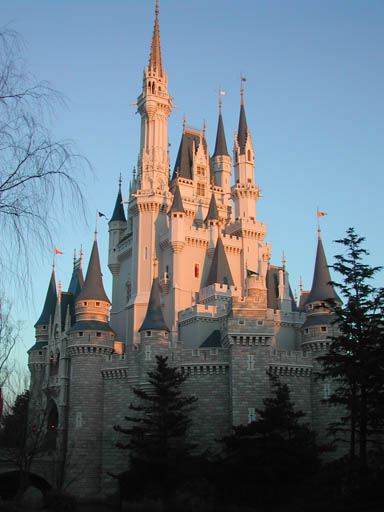
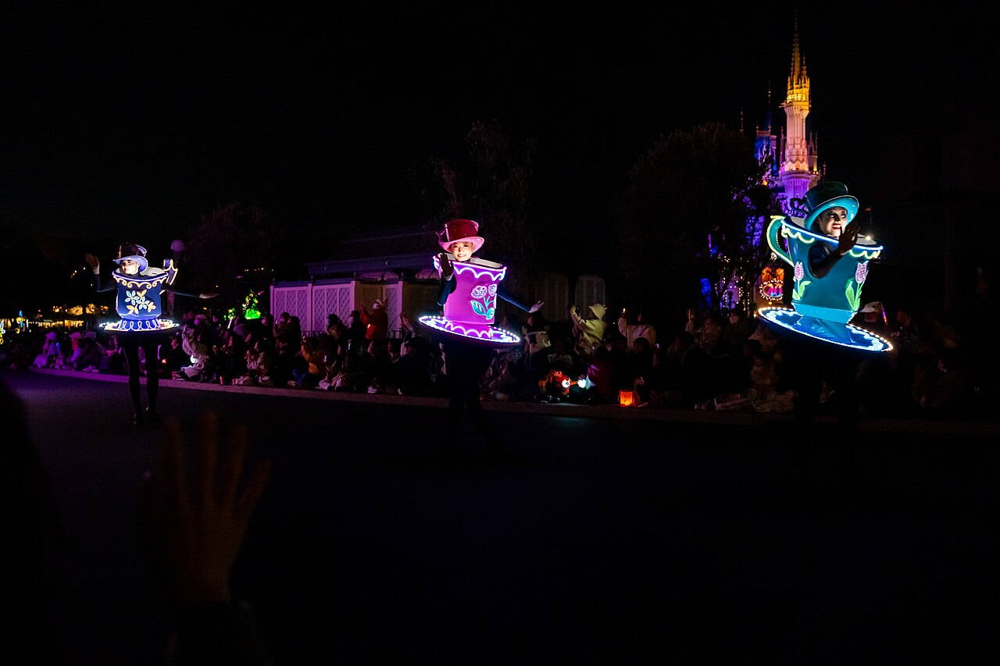
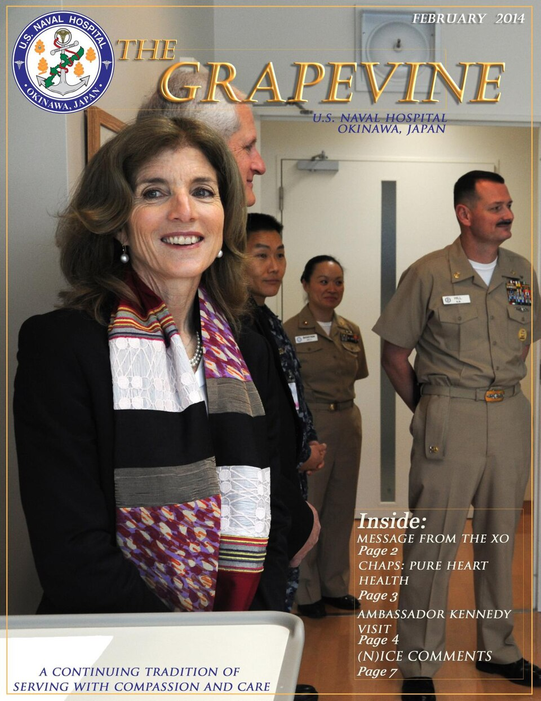
06:45
新宿 → 东京站
JR中央线快速约15分钟；东京站内跟“京叶线”标识步行换乘，站内步行可能需要10—15分钟。
JR中央线快速约15分钟；东京站内跟“京叶线”标识步行换乘，站内步行可能需要10—15分钟。
07:20
东京站 → 舞滨站
JR京叶线快速约15分钟；舞滨站南口出站，步行约5分钟到迪士尼乐园入口。
JR京叶线快速约15分钟；舞滨站南口出站，步行约5分钟到迪士尼乐园入口。
入园后
立即打开官方App
先处理热门项目预约/付费快速通行，再按App排队时间走。不要在门口临时研究账号。
先处理热门项目预约/付费快速通行，再按App排队时间走。不要在门口临时研究账号。
闭园后
舞滨 → 东京 → 新宿
原路返回；散场拥挤，实际约50—70分钟。
原路返回；散场拥挤，实际约50—70分钟。
吃饭：11:00前提前午餐避开高峰；晚餐可在17:00左右。想进主题餐厅需用官方App提前预约。
Google Maps：去迪士尼 ↗D8｜10月1日 日光东照宫 → 中禅寺湖 → 华严瀑布
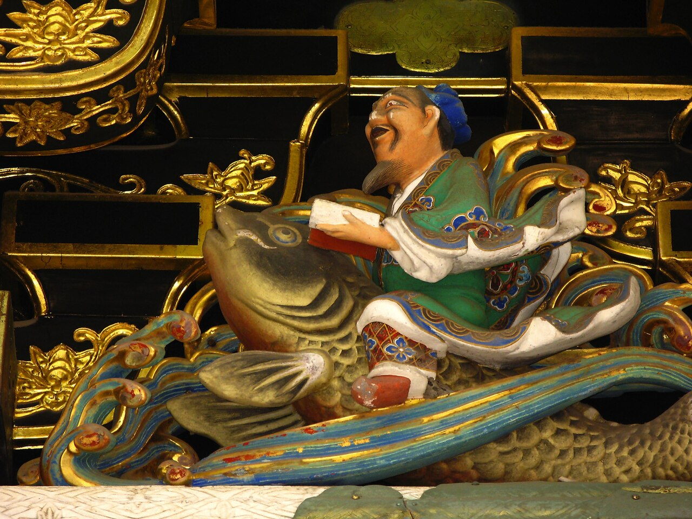
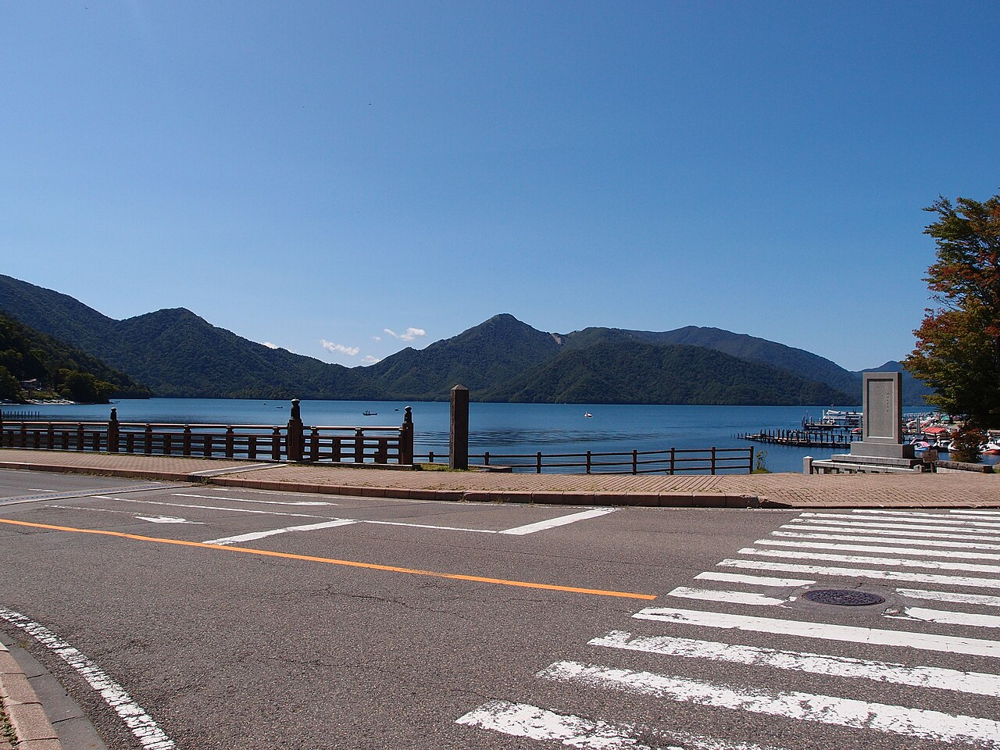
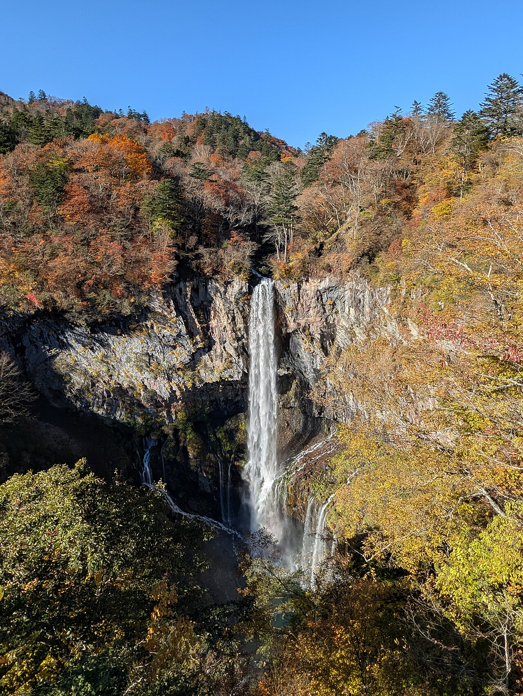
06:30
新宿 → 浅草站
都营大江户线到藏前，再换都营浅草线到浅草；约35—45分钟。预留步行到东武浅草站的时间。
都营大江户线到藏前，再换都营浅草线到浅草；约35—45分钟。预留步行到东武浅草站的时间。
07:30
东武浅草 → 东武日光
乘东武特急SPACIA X或其他特急，约1小时50分；指定席提前购票。
乘东武特急SPACIA X或其他特急，约1小时50分；指定席提前购票。
09:30
东武日光站 → 西参道入口
乘东武巴士约10分钟，下车步行进入东照宫；古迹区游览约2小时。
乘东武巴士约10分钟，下车步行进入东照宫；古迹区游览约2小时。
12:30
西参道 → 中禅寺温泉
乘往中禅寺温泉/汤元方向巴士约45—55分钟，山路可能堵车。
乘往中禅寺温泉/汤元方向巴士约45—55分钟，山路可能堵车。
14:00
中禅寺湖 → 华严瀑布
湖边步行后，从中禅寺温泉巴士站步行约5分钟到华严瀑布入口。
湖边步行后，从中禅寺温泉巴士站步行约5分钟到华严瀑布入口。
16:00
中禅寺温泉 → 东武日光 → 浅草
巴士回车站约45—60分钟，再坐预约特急回浅草。务必提前确定返程班次。
巴士回车站约45—60分钟，再坐预约特急回浅草。务必提前确定返程班次。
吃饭：东照宫附近或中禅寺温泉吃汤波料理、荞麦。当天巴士衔接紧，不排网红餐厅。
Google Maps：日光路线 ↗D9｜10月2日 东京 → 北京
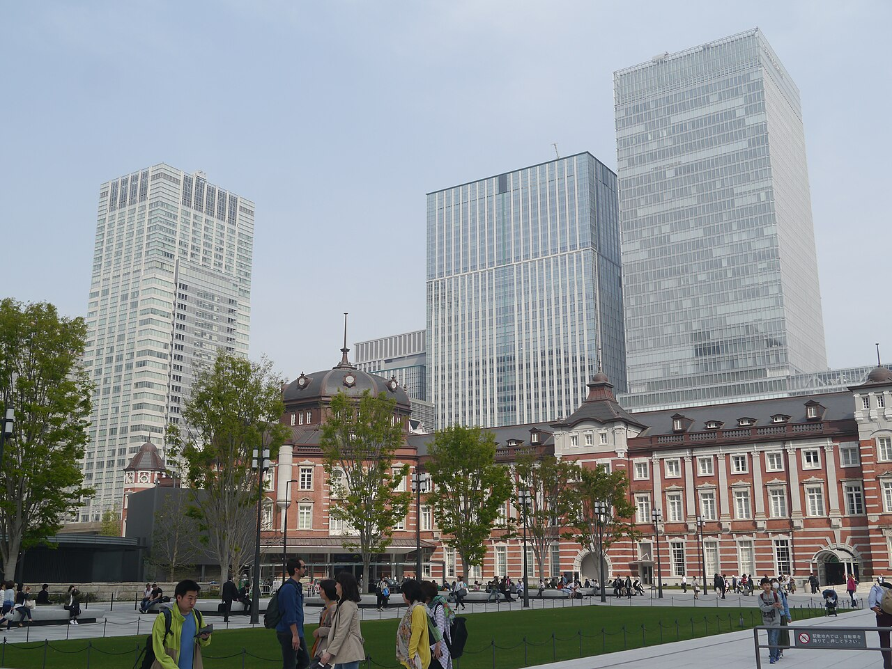
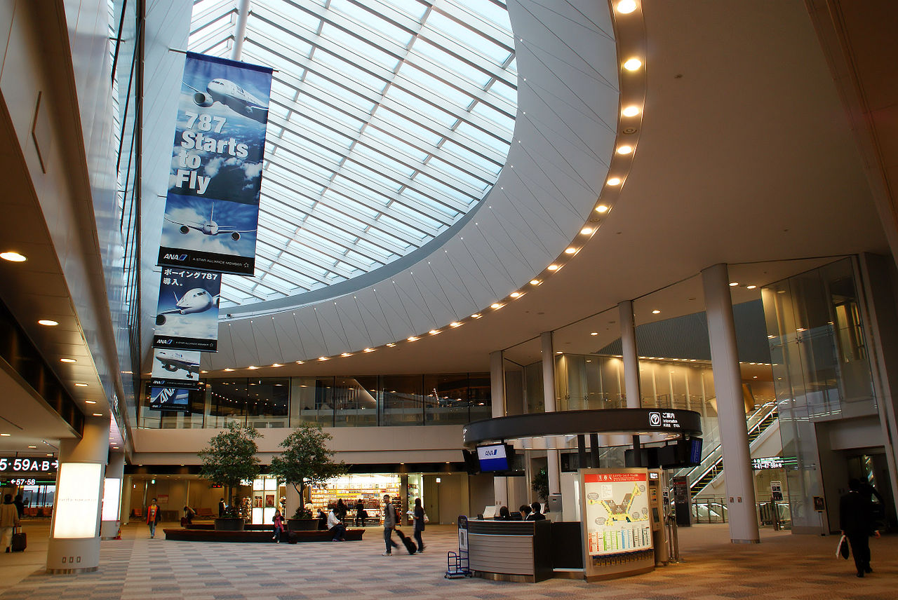
起飞前5h
停止购物、返回酒店取行李
检查护照、充电宝、退税商品和行李重量。
检查护照、充电宝、退税商品和行李重量。
起飞前4h
新宿 → 机场
成田：JR N’EX直达约80—90分钟；羽田：JR到品川后换京急线，约45—55分钟。
成田：JR N’EX直达约80—90分钟；羽田：JR到品川后换京急线，约45—55分钟。
起飞前3h
抵达航站楼
办理值机、托运、安检和出境；免税购物放在完成手续后。
办理值机、托运、安检和出境；免税购物放在完成手续后。
当前版本的前提
东京住宿暂按新宿站附近计算；去程和回程机场暂按成田制作，同时在文字中补充了羽田方案。酒店和航班确定后，应再把D1、D5、D6、D7、D8、D9调整到具体站口和实际班次。
全部照片均为下载到本地的不同图片文件，没有在页面中重复引用同一张图。照片来自Wikimedia Commons的真实地点素材，仅作行程识别和预览。